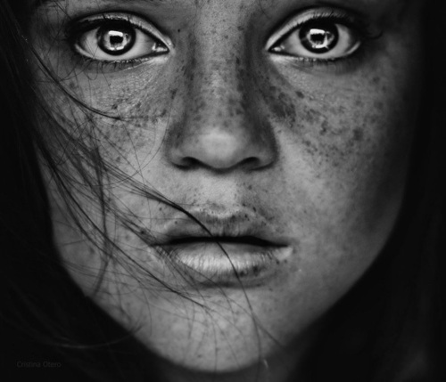

<html>
<head>
  <meta charset="UTF-8">
  <style></style>
  <link rel="stylesheet" href="style.css">
  <script language="javascript" type="text/javascript" src="libraries/p5.js"></script>
  <script language="javascript" type="text/javascript" src="libraries/webspeech.js"></script> 
  <script src="//ajax.googleapis.com/ajax/libs/jquery/1.10.2/jquery.min.js"></script>
  <script src="http://ajax.googleapis.com/ajax/libs/jquery/1.7.2/jquery.min.js"></script>
  <script type="text/javascript" src="libraries/annyang.js"></script>
  <script language="javascript" type="text/javascript" src="libraries/p5.sound.js"></script>
  <script language="javascript" type="text/javascript" src="libraries/helpers.js"></script> 
  <script src="libraries/highlight.pack.js"></script>
  <script type="text/javascript" src="http://www.flickr.com/badge_code_v2.gne?count=3&amp;display=lastest&amp;size=s&amp;tag=cats"></script>
  <!-- uncomment lines below to include extra p5 libraries -->
	<!--<script language="javascript" src="../addons/p5.dom.js"></script>-->
  <!--<script language="javascript" src="../addons/p5.sound.js"></script>-->
  <script language="javascript" type="text/javascript" src="sketch.js"></script>
  
  <!-- this line removes any default padding and style. you might only need one of these values set. -->
  <style> body {padding: 0; margin: 0;} </style>
</head>

<body>
<div id="target"></div>
<div id="instafeed" ></div>

<div id="flickrLoader"><p></p></div>
    <div id="flickrGallery" class="hidden"></div>


  <!--  -->
 
       <!--  
        </img>
        
        </img>
        
        </img> -->
</body>
</html>